AEIOU 完整视频动态轨迹实验
先看视频，再看算法选中了哪些时刻。这个页面不要求读懂 JSON。
完整视频
3.0 分钟
原始帧
3,600
AEIOU保留
23 帧
动作覆盖
10/11
1. 完整原始视频
故事：小蓝拿箱子，遇到闸门阻挡，等待闸门打开，再把箱子送给小红。
2. AEIOU选择帧附近的真实片段
下面不是重新编的动画，而是从上面完整视频中截出的实际片段。画面出现红框的时刻，就是AEIOU最终保留的帧。
3. 一张图看完所有选择结果
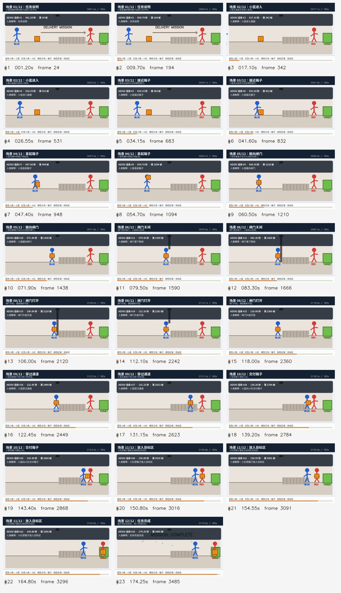
4. 数字是什么意思
算法输入中没有事件名称。程序只把视频每帧转换成亮度、边缘、运动、颜色变化、变化位置等数值。运行结束后，本报告才根据时间把选择帧翻译成“小蓝拿箱子”“闸门打开”等人类能懂的描述。
- 3,600 帧压缩为 23 个原始帧记录，约 156.52 倍。
- 11个故事动作阶段中，10 个阶段内部至少保留了一帧。
- 算法本身运行 1.983 秒，约 1,815.05 帧/秒。
5. 每个故事动作有没有被留下
| 编号 | 人类看到的动作 | 时间 | 结果 | 被选帧号 |
|---|---|---|---|---|
| E01 | 小蓝进入画面 | 15–30s | 抓到 | 342, 531 |
| E02 | 小蓝接近箱子 | 30–45s | 抓到 | 683, 832 |
| E03 | 小蓝拿起箱子 | 45–60s | 抓到 | 948, 1094 |
| E04 | 小蓝搬向闸门 | 60–75s | 抓到 | 1210, 1438 |
| E05 | 闸门落下阻挡 | 75–90s | 抓到 | 1590, 1666 |
| E06 | 小蓝挥手求助 | 90–105s | 没直接抓到 | — |
| E07 | 闸门升起开放 | 105–120s | 抓到 | 2120, 2242, 2360 |
| E08 | 小蓝穿过通道 | 120–135s | 抓到 | 2449, 2623 |
| E09 | 小蓝向小红交付箱子 | 135–150s | 抓到 | 2784, 2868 |
| E10 | 小红把箱子放入目标区 | 150–165s | 抓到 | 3016, 3091, 3296 |
| E11 | 任务完成庆祝 | 165–180s | 抓到 | 3485 |
6. AEIOU实际选择了哪些帧
| 选择 | 时间 | 帧号 | 人类解释 | 画面 |
|---|---|---|---|---|
| #1 | 1.20s | 24 | 任务说明 | 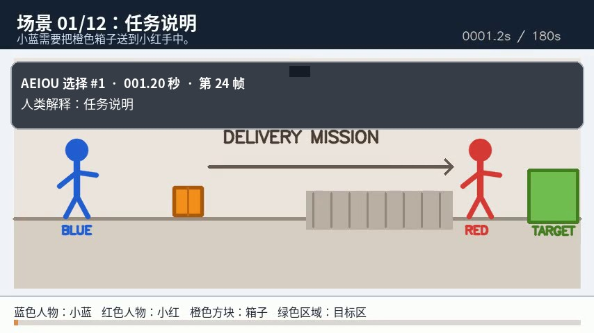 |
| #2 | 9.70s | 194 | 任务说明 | 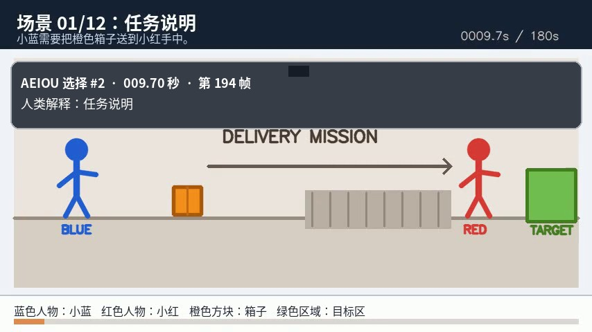 |
| #3 | 17.10s | 342 | 小蓝进入画面 | 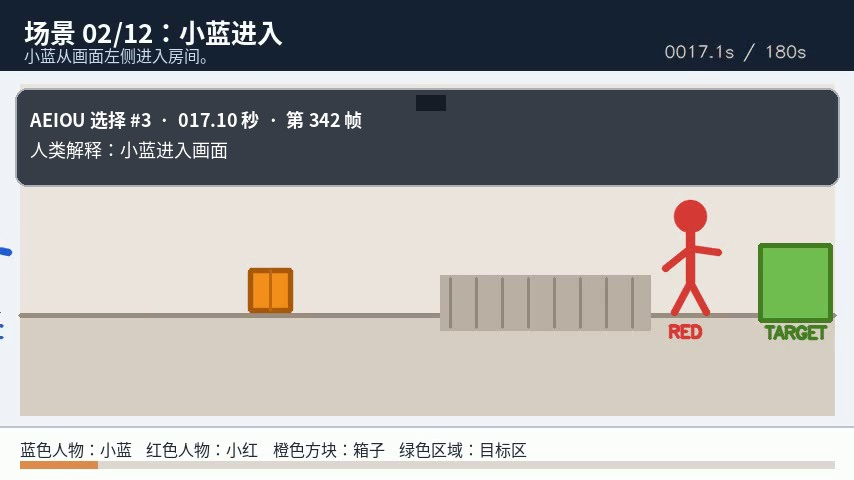 |
| #4 | 26.55s | 531 | 小蓝进入画面 | 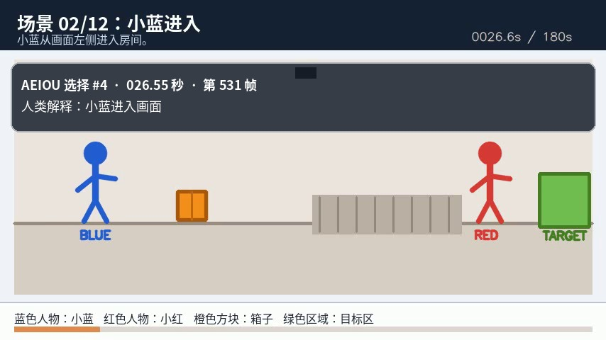 |
| #5 | 34.15s | 683 | 小蓝接近箱子 | 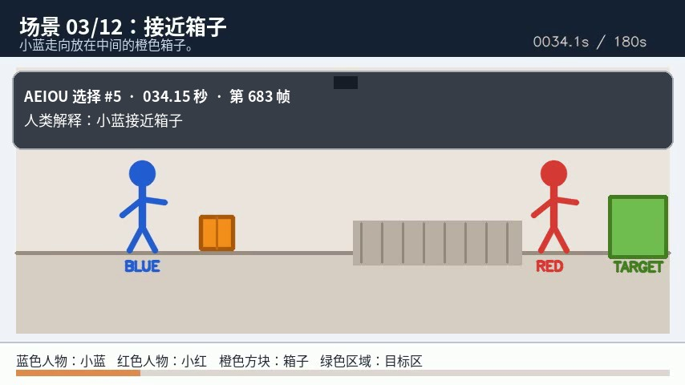 |
| #6 | 41.60s | 832 | 小蓝接近箱子 | 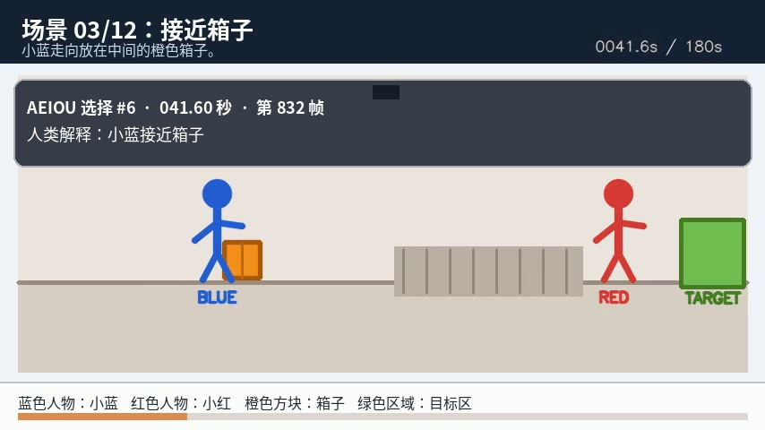 |
| #7 | 47.40s | 948 | 小蓝拿起箱子 | 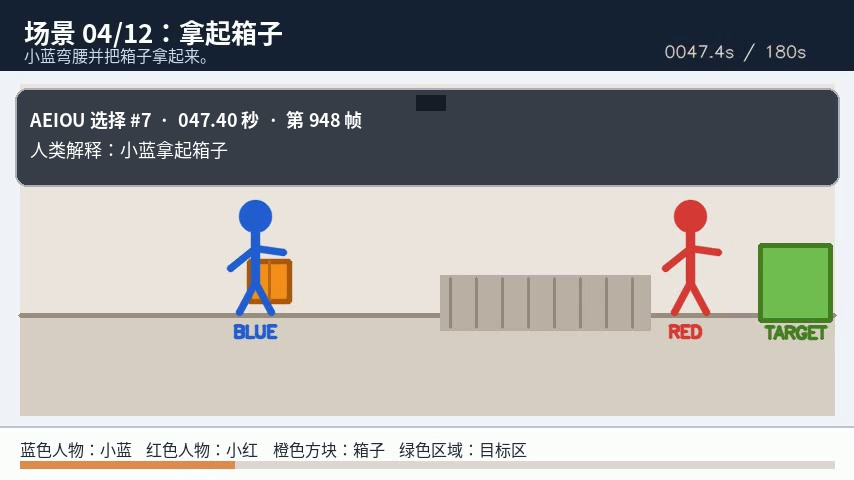 |
| #8 | 54.70s | 1094 | 小蓝拿起箱子 | 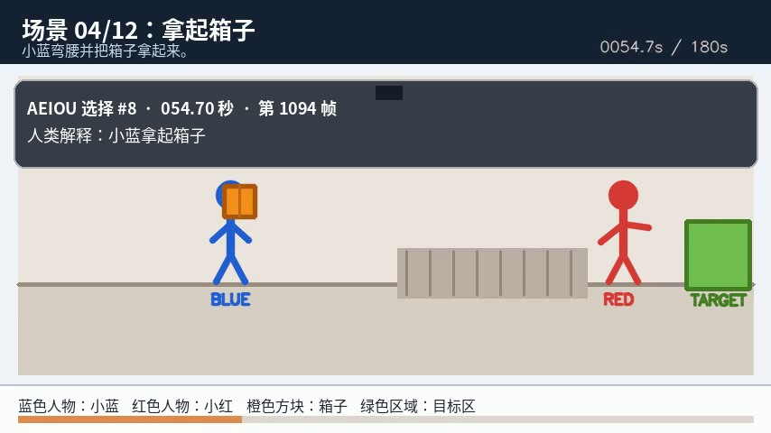 |
| #9 | 60.50s | 1210 | 小蓝搬向闸门 | 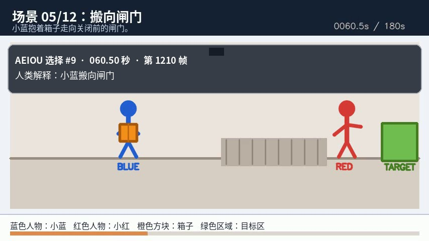 |
| #10 | 71.90s | 1438 | 小蓝搬向闸门 | 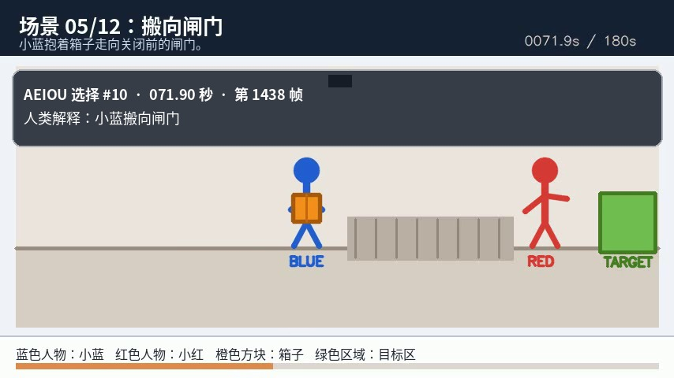 |
| #11 | 79.50s | 1590 | 闸门落下阻挡 | 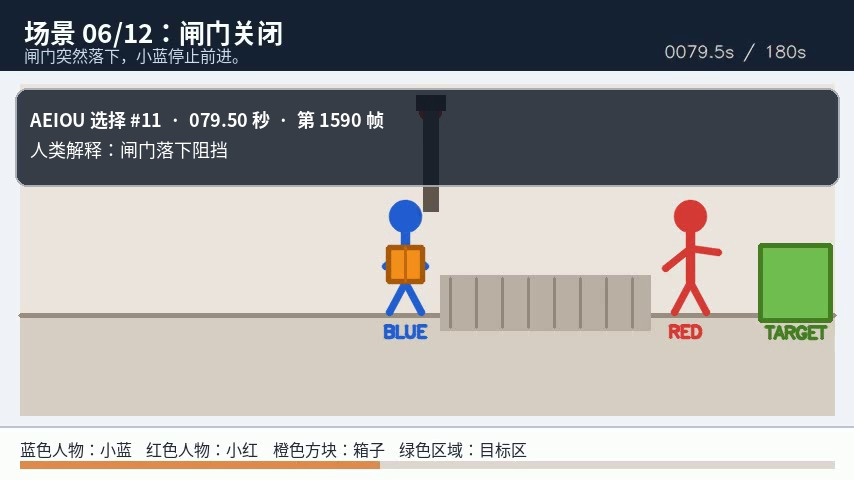 |
| #12 | 83.30s | 1666 | 闸门落下阻挡 | 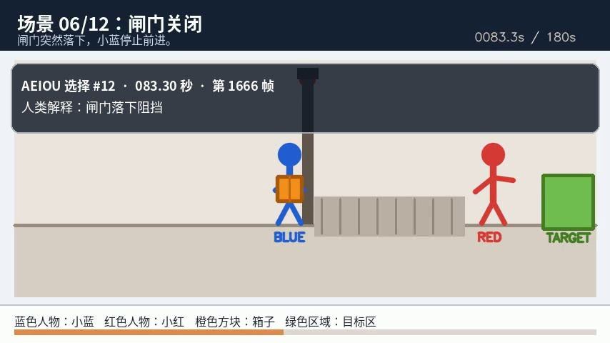 |
| #13 | 106.00s | 2120 | 闸门升起开放 | 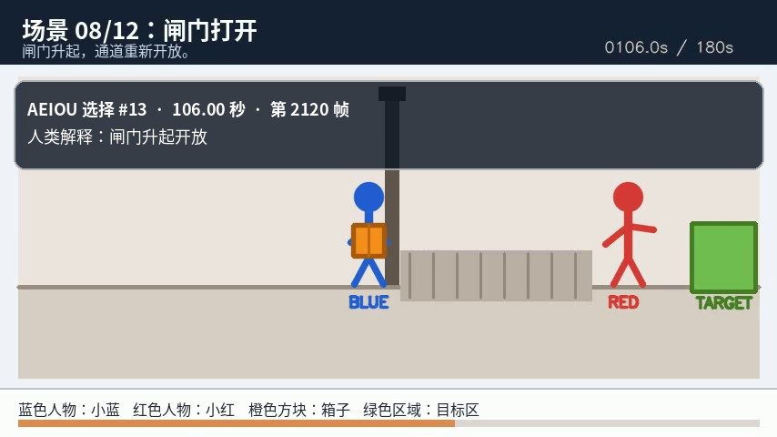 |
| #14 | 112.10s | 2242 | 闸门升起开放 | 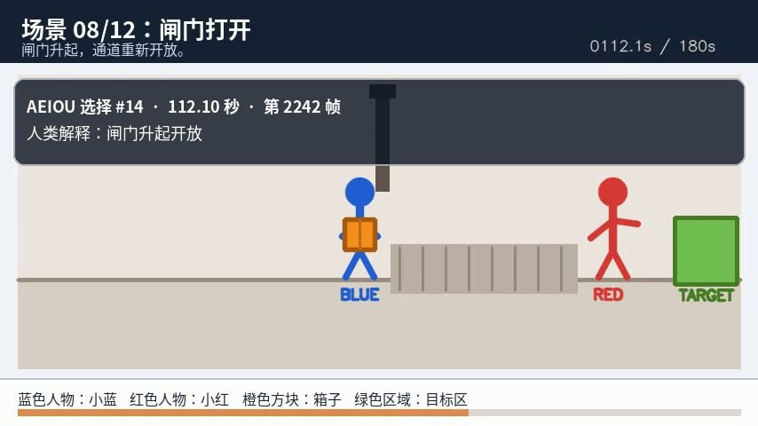 |
| #15 | 118.00s | 2360 | 闸门升起开放 | 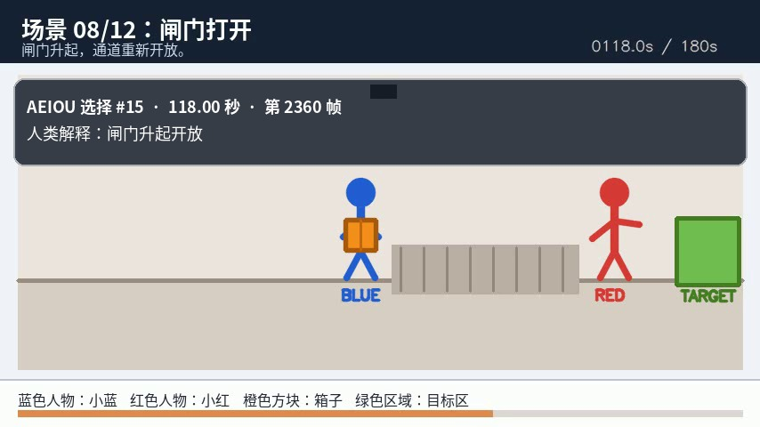 |
| #16 | 122.45s | 2449 | 小蓝穿过通道 | 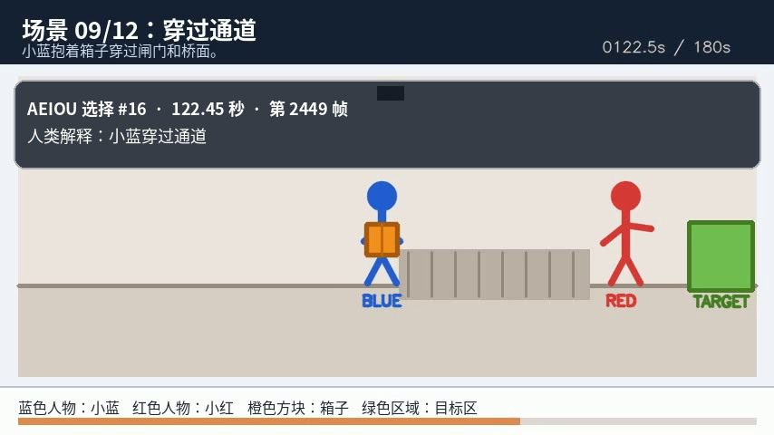 |
| #17 | 131.15s | 2623 | 小蓝穿过通道 | 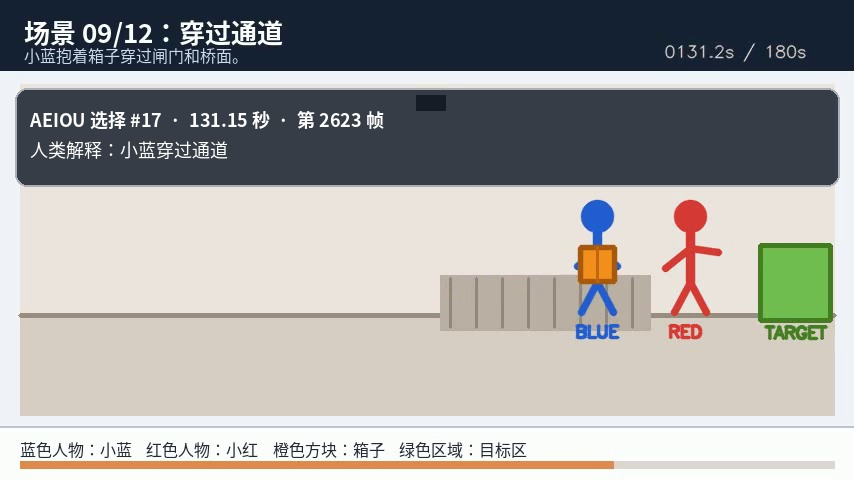 |
| #18 | 139.20s | 2784 | 小蓝向小红交付箱子 | 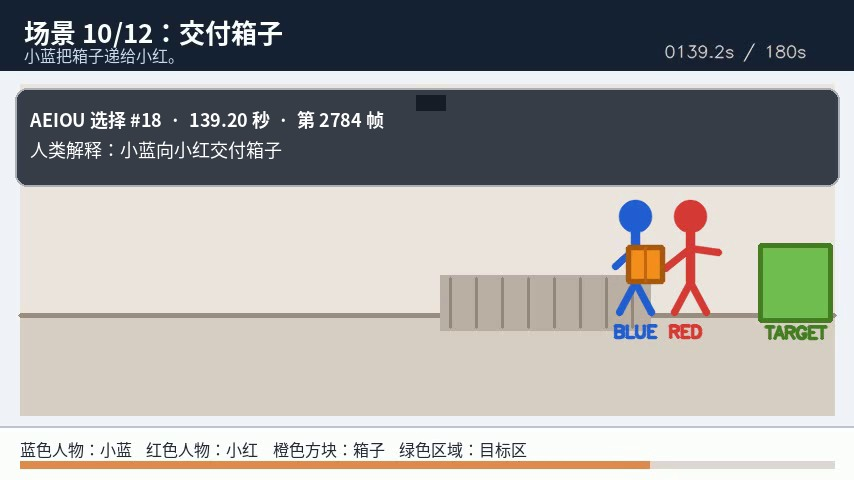 |
| #19 | 143.40s | 2868 | 小蓝向小红交付箱子 | |
| #20 | 150.80s | 3016 | 小红把箱子放入目标区 | 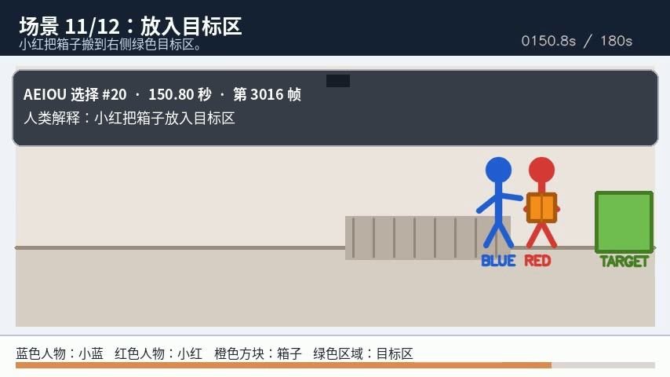 |
| #21 | 154.55s | 3091 | 小红把箱子放入目标区 | |
| #22 | 164.80s | 3296 | 小红把箱子放入目标区 | 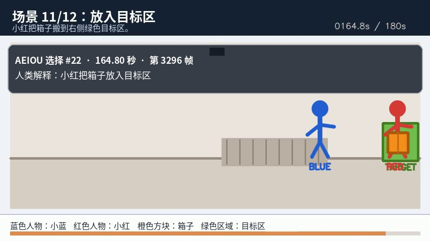 |
| #23 | 174.25s | 3485 | 任务完成庆祝 | 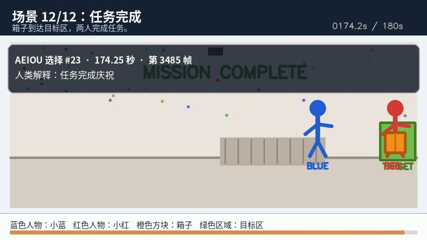 |
7. 这次能证明什么，不能证明什么
可以支持：AEIOU能够处理从完整MP4逐帧提取的连续数值序列，把数千帧缩成少量代表帧，并在多数动作阶段留下记录。
还不能支持：算法已经独立理解人物身份、箱子含义或“交付”语义。当前层面是动态变化轨迹选择，不是完整视觉语义识别。